Output — auto-detected Setup-to-Impact windows stitched into a highlight clip, no manual scrubbing
Editing golf highlight reels by hand, scrubbing through footage to find the Setup-to-Impact window for every swing, doesn't scale. For client Sure Mobility, I built a service that detects swing phases automatically and cuts the highlight window out of raw footage on its own.
The primary signal is an action-classification model that recognizes each swing phase directly from video. Amplitude-peak detection on the audio track (the sharp transient of club striking ball) runs alongside it as a secondary check, catching boundary cases the visual model alone tends to miss. I served the pipeline as a FastAPI application on a GPU inference instance rented on AWS.
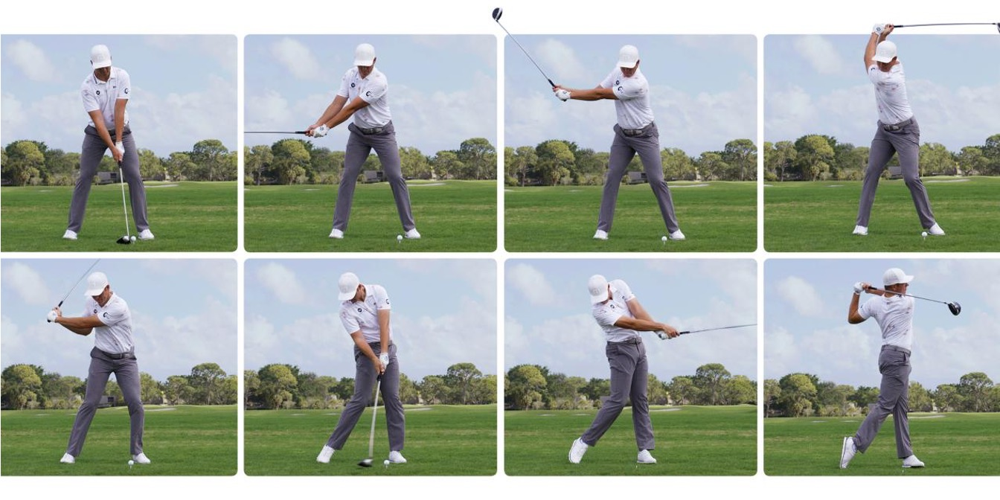
The named swing phases the dataset labels frame by frame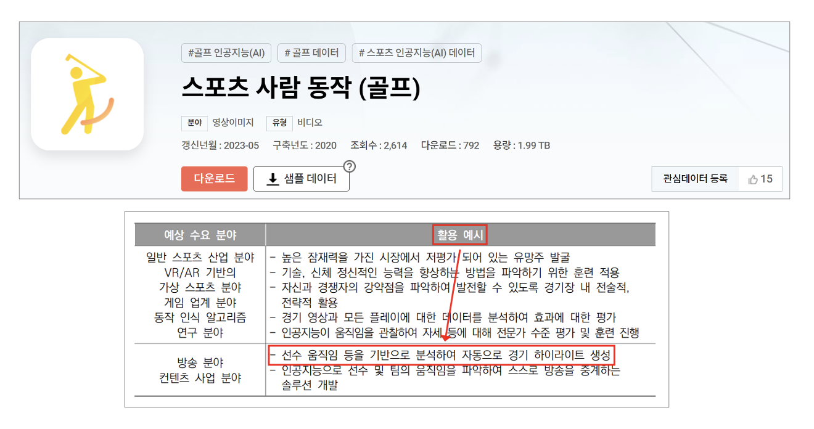
AI-HUB's "Sports Person Action (Golf)" dataset (1.99TB) — automatic highlight generation from player movement is listed as one of its intended uses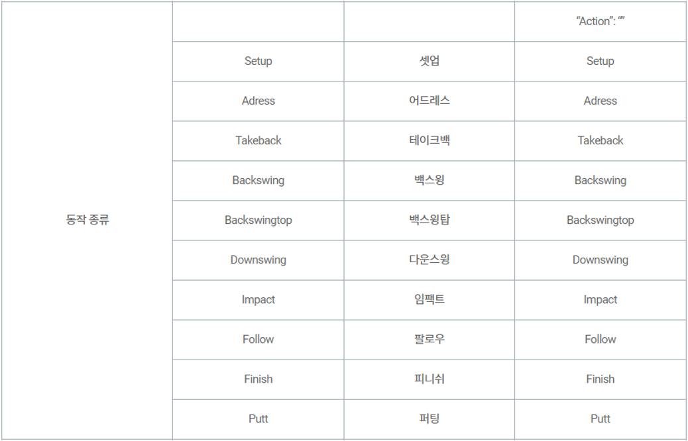
Label schema — 10 phase classes from Setup through Putt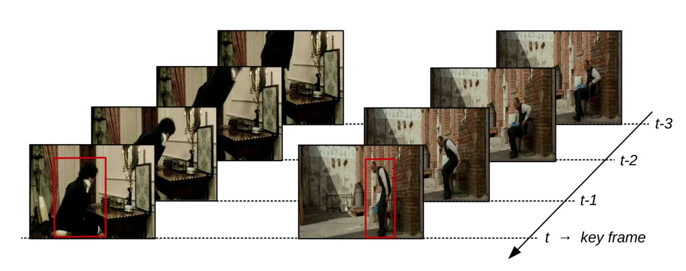
A single static frame is context-blind: is this person sitting down or standing up? You can't tell from one image. Video classification reads the window of frames leading up to the key frame so the model has motion context, not just a snapshot.The same ambiguity shows up in a golf swing. A single frame can look like address, the top of the backswing, or the finish depending on the angle, and a model scoring frames independently will confuse them. YOWO reads the short clip leading into each key frame so it's classifying motion, not a pose.
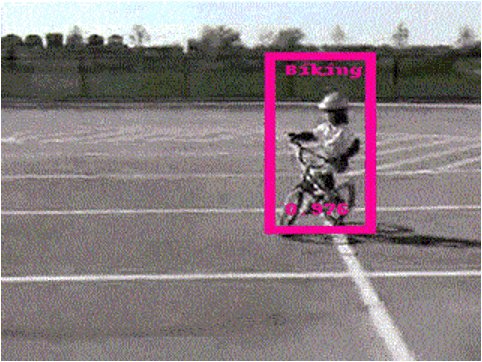
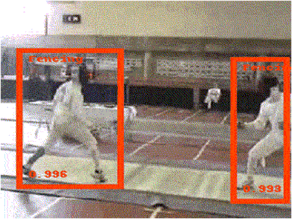
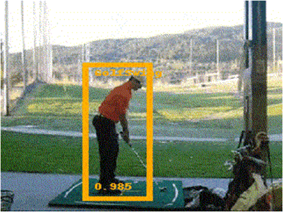
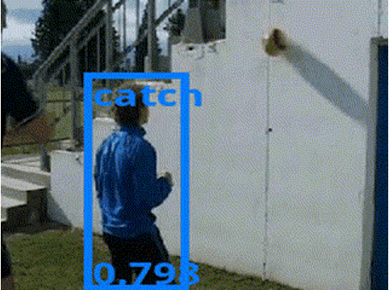
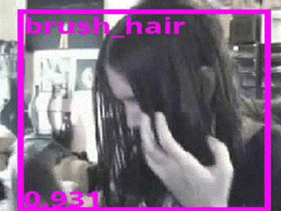
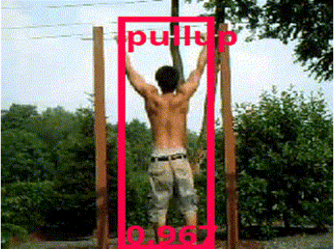
The underlying action-detection model (YOWO) across a range of action classes, correctly localizing a golf swing at 0.985 confidence alongside biking, fencing, catch, brush_hair, and pullup.
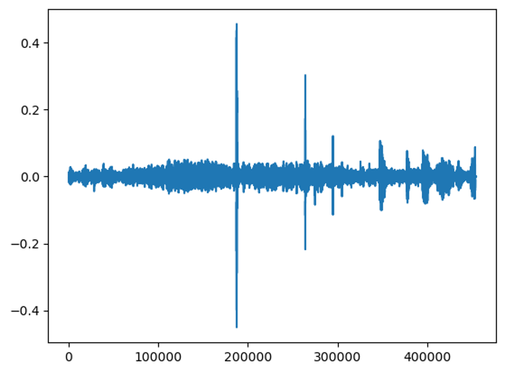
The secondary signal — amplitude peaks in the audio track flag candidate impact moments the video classifier can missThe action classifier does the primary work of labeling swing phases. The amplitude-peak check is a lightweight backstop: around each peak, a heuristic 2-seconds-before to 1-second-after window is searched for the actual impact frame, rather than running a full second model.
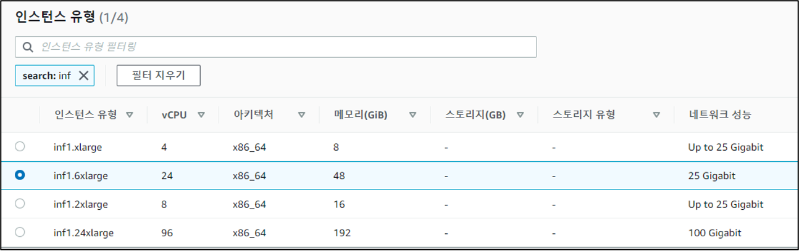
Rented a GPU inference-optimized instance on AWS to host the model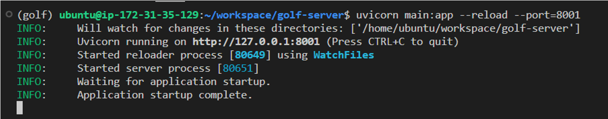
Served as a FastAPI application on top of it